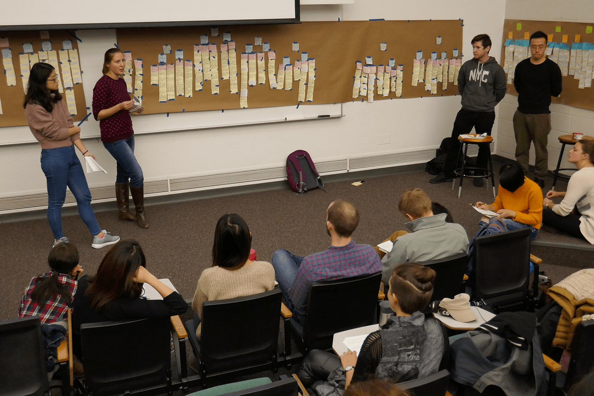
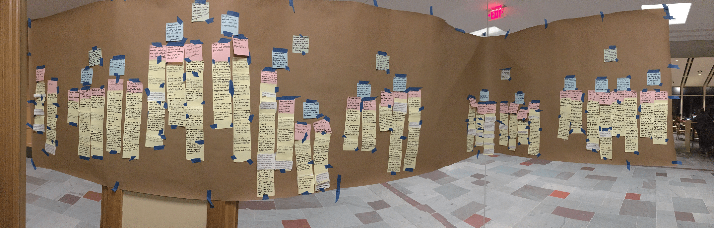
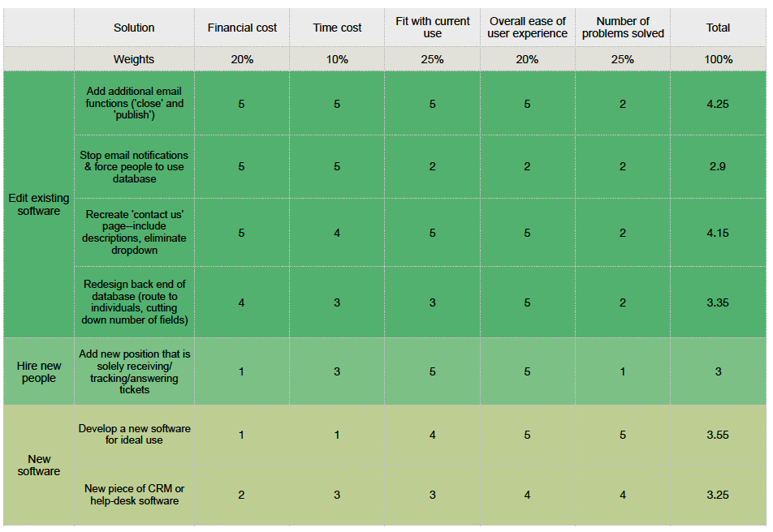
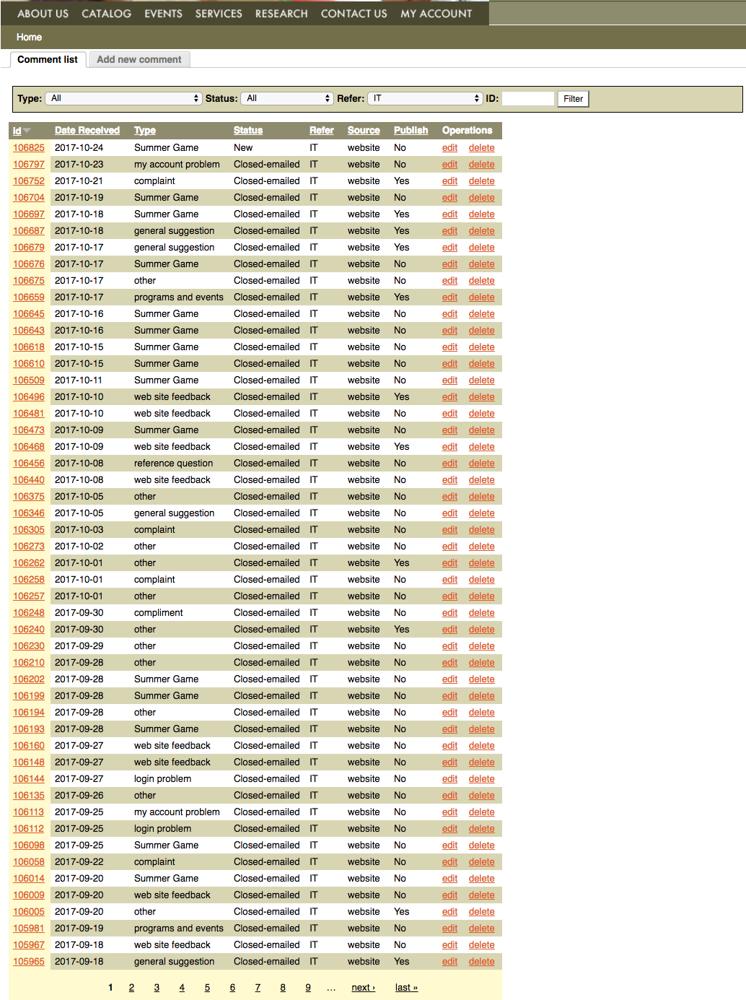
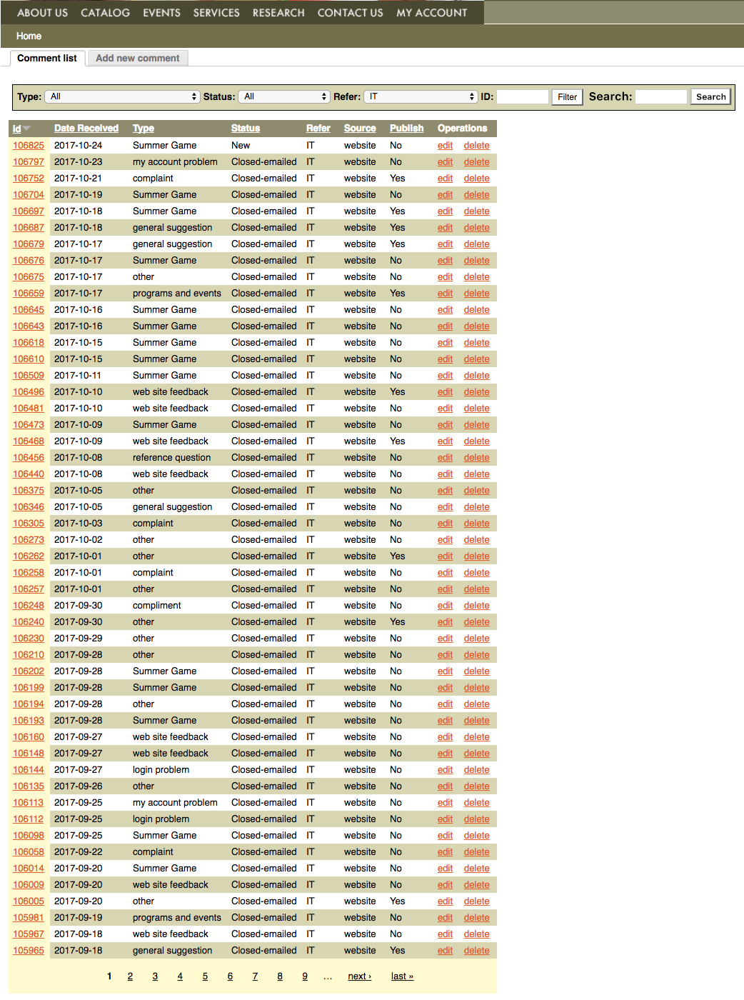
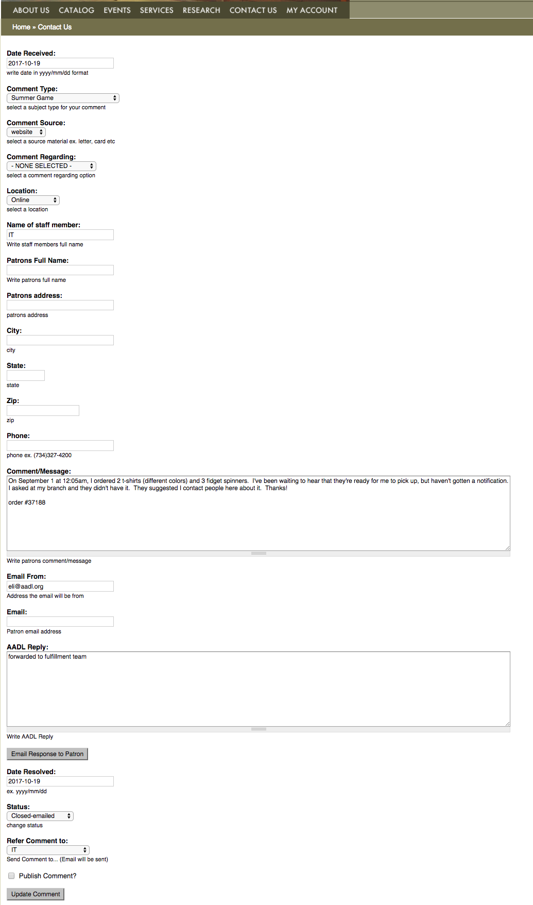
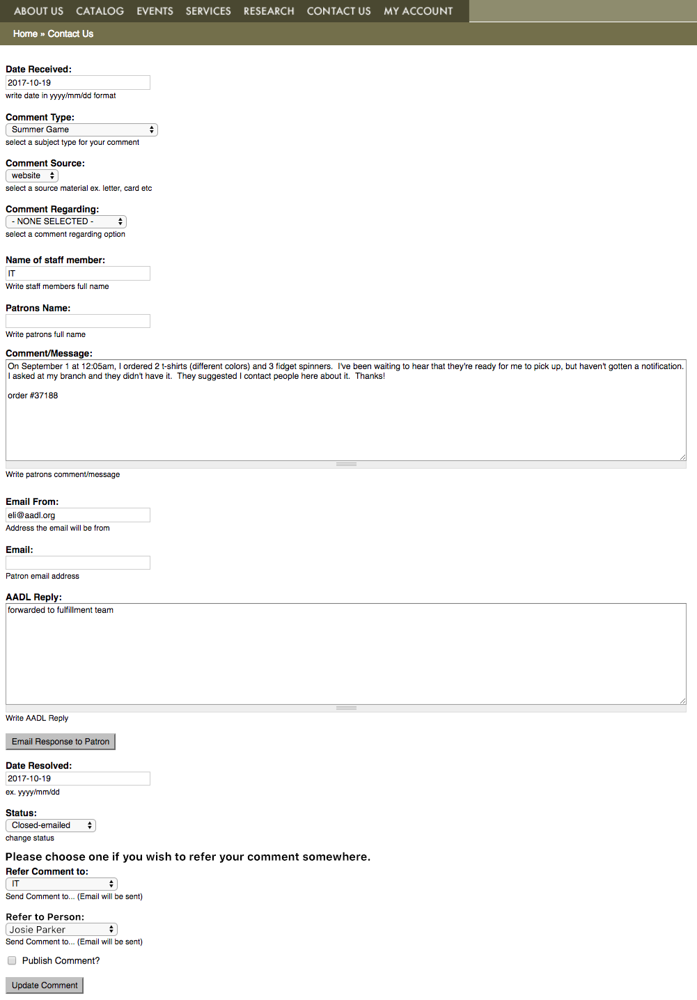
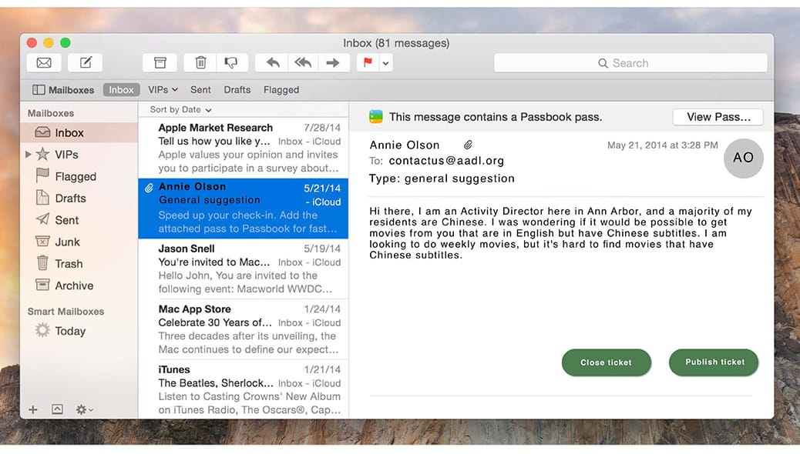
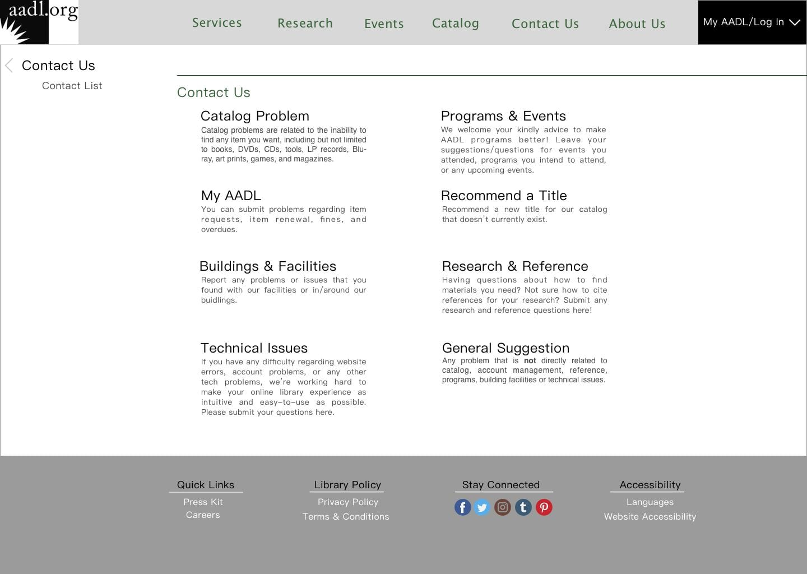

YDCV: Young Design-Centered Visionaries
YDCV was a consulting team that worked with a local library in order to solve an information related problem through several recommendations.
Fast Facts
Role:
Project Course:
SI 501: Contextual Inquiry and ConsultingDates:
September 2017 - Decemeber 2017Team Size
Tools:
Skills:
The Problem
The library has about 4 methods that requests come in from patrons. ‘Contact Us’, ‘Ask Us’ e-mail, social media, and SMS. These four methods all end up in different queues and different people. Each person has their own way of responding and sometimes request tickets need to be rerouted. There is no systematic way to respond to these requests and sometimes these tickets never get ‘closed’ even though they have been solved.
Converged Problem Statement
The requests coming in to the library via the four channels are supposed to be sent to the appropriate staff based on the content of the request. However, the system does not always function the way it is supposed to, due to a lack of a systematic method in responding to these requests. Staff members tend to use different approaches to replying to tickets, based on the contents of the message and their own communication styles, leading to incomplete records on the library's end.
Communication Paths
The Process
Observations and Interviews
We began conducting interviews with six employees because in order to understand the process we had to observe at the client's location and ask questions. We believed this was the best way. The employees we interviewed were identified as as users who interact with the system in a variety of different ways, and spanned roles from leadership to librarian to support staff.My Role
As the communication lead on the team, I managed all correspondence of establishing the interviews and presentations with the client. I also held a secondary role supporting the main creative designer in creating additional recommendation concepts. Additionally, I lead 3 of the 6 semi-structured interviews and observations.
Affinity Wall
AAfter each interview, we met to debrief, summarize the interview, and create a list of ‘affinity notes’—small, concrete pieces of data about the interaction between staff and the request ticketing system. After the last interview, we took all of these notes and created an ‘affinity wall’ by grouping like notes together. This allowed us to see the commonalities between interviews and pick out the overarching problems.
 
Pink Notes: Clustered the yellow notes and the overarching problem.
Blue Notes: Was a cluster of pink notes with larger issues summarized.
Green Notes: Was a cluster of Blue notes with the highest level detail summarized.
Findings
Using the Green Notes from the Affinity wall we created two areas of focus that we found to be the main problem at the library.- 1. Many tickets need to be rerouted. "50% of the tickets are tickets that were meant for a different person"
- 2. Tickets are difficult to search for or track after they are answered. This makes it very time consuming which it could be used elsewhere.
- 3. The Staff are divided on answering tickets using email or using the database. Email is perceived more efficient but causes problems on the backend because it doesn't account for the act of closing the tickets. The database takes an extra step to respond but causes fewer headaches and more efficient in the long run.
Brainstorming
We organized a table potential solutions and ranked them on several criteria.
Recommendations
First Set: Redesign Current Systems
Our first set of recommendations focuses on altering the current system, rather than starting with something new entirely. We believed that improving the current system would be a valid solution, due to our finding that most people believe this system is successful in its ultimate goal of meeting patron needs. Therefore, we have come up with several ways to alter the existing system in a way that would address some issues while still retaining the system that people are familiar with and that works for patrons. These solutions are generally low-effort, and while they do not address every problem (the abundance of email and the lack of cohesion among the different request intake channels remain largely unsolved), they address the main issues that we identified. They could all be implemented together to greater effect.
1A: Too Many fields and No Search Functinality
This solution removes some fields containing the patron’s information, which our interviewees and we found unnecessary, and adds in an additional field which allows you to search and find specific people at the AADL to transfer the ticket to. In addition to this, when staff looks at the list of tickets, they’ll be able to search for keywords or dates to find tickets.
Old Design
New Recommendation
Old Design
New Recommendation
1B: Staff Use Two Different Systems
We believe that embedding a call-to-action button in the email interface would solve the problem efficiently. Staff members will be able to close or publish the tickets from their email interface without the hassle of logging into the database and filling out a long list of ticket information.
1C: Patrons Are Selecting The Wrong Category
The third recommendation we wanted to provide was redesigning how the "Contact Us" page looked. We theorized staff was redirecting tickets because patrons were selecting the wrong category. Therefore, this recommendation focused on adding descriptions to category departments. In addition, we added additional departmental fields that were non-existent so it made forwarding tickets necessary.
Second Set: Can CRM Software Solve it?
We also discussed taking advantage of current Customer Relationship Management Software. Although this software is normally used for business with customers that bring in revenue, CRM could also be used to assist patrons at a library through the various ways such as, chatbot, virtual self-serve service, automated emails and many others. To our client, we suggested 4 various CRM software.
LiveAgent | HelpScout | ZenDesk | Kayako |
Third Set: Single Platform For All Problems.
This recommendation would solve the issues of too much email clutter, a poor backend system that is difficult to use, and the many different channels of communication. Although it doesn't account on the patron's side of usage. This new piece of software would be able a central and cohesive interface which would adapt to all the staff's needs that were identified in our interviews and observations. This piece of software would be installed on the staff’s computers so it is not necessary to go to additional websites as it is now. This recommendation could also work with other recommendations such as redesigning the "Contact Us" page to help the tickets transfer to the right person.
Conclusion
In order to assist the library in responding to and managing requests coming through the current entry channels more cohesively and systematically, our team conducted six interviews and based on these, put forwards three recommendations. Among them, the first recommendation of adding additional email functions, eliminating fields on the back end of the database, and redesigning the “contact us” page is probably the most effective and straightforward approach in solving the problems. In order to completely eliminate issues, we suggest the library considers our other recommendations such as developing a new software for ideal use or introducing a new piece of CRM software.
Reflection
There are some possible flaws in our findings. First, our team failed to conduct most of our interviews in the interviewee’s workplaces due to restrictions such as the limited physical space of participants’ workplaces. Although each interviewee showed us how they dealt with requests by walking us through the procedures as they perform them in their normal daily work, we may have missed information that would have changed our report.
Additionally, although our team conducted our interviews with six AADL staff members of various job responsibilities, most of them had administrative roles. More librarians should have been involved in the interviews so that we would have a more diverse use cases to look at when making our recommendations.
Finally, we did not interview any library patrons about their experience of using the current “contact us” system. Instead, we got data about the problems patrons might face from the library staff we interviewed. This could cause a lot of misunderstanding when we analyze the current library system since patrons are also responsible for a significant part of the system interaction. We suggested to our client that they take this into considerations when deciding what to implement.